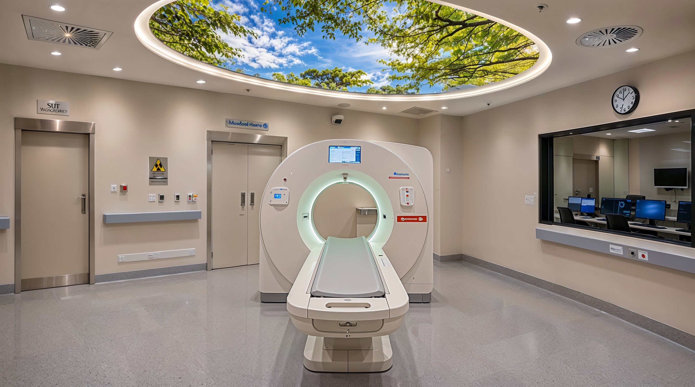
Why is an MRI suite planned from the magnetic field outward, not from the room inward?
An MRI scanner produces detailed images of soft tissue — brain, spine, joints, abdomen, pelvis, heart and tumours — without using ionising radiation. But the superconducting magnet at its core stays at full field strength 24 hours a day, whether or not a patient is being scanned. Every metal object, every person and every piece of equipment that approaches the scanner enters that field.
This single fact drives the whole suite: controlled access zones, patient screening, a radiofrequency-shielded scan room, a quench vent to the outside, a structure able to carry several tonnes, and a delivery route for a magnet that may one day need replacing.
MRI places the patient inside a strong, uniform magnetic field. Hydrogen nuclei in the body's water and fat align with the field. Short radiofrequency (RF) pulses tip them out of alignment; as they relax, they emit weak radio signals that receiver coils placed on the body pick up. Gradient coils vary the field in space so each signal can be located, and a computer reconstructs the signals into cross-sectional images. [6, 7]
Because the signals are radio waves of only a few microvolts, the scan room must be sealed against outside radio noise — the RF cage is part of the imaging system, not just part of the building. At 1.5 T the hydrogen resonance frequency is about 63.9 MHz, inside the FM-to-TV broadcast range, which is why shielding continuity matters so much.
A 1.5 T scanner is the general-purpose workhorse of clinical MRI. In a hospital or cancer centre it serves almost every department: [6, 8]
| Patient Type | Arrival | Planning Implication |
|---|---|---|
| Outpatient | Walks in for a booked slot | Reception, waiting, change cubicles, lockers, screening |
| Inpatient | Wheelchair, trolley or bed | Transfer to MR-conditional trolley outside Zone IV |
| Emergency / Stroke | Direct from ED | Short route from ED, rapid screening, slot flexibility |
| Sedated / Anaesthetised | With anaesthesia team | Induction & recovery bay, MR-conditional anaesthetic machine, medical gases |
MAGNETOM Sola is Siemens Healthineers' 1.5 T wide-bore platform. It was chosen as the reference system for this brief because 1.5 T suits the broadest clinical mix, carries the widest implant-conditional labelling, and has less demanding siting than 3 T. [1]
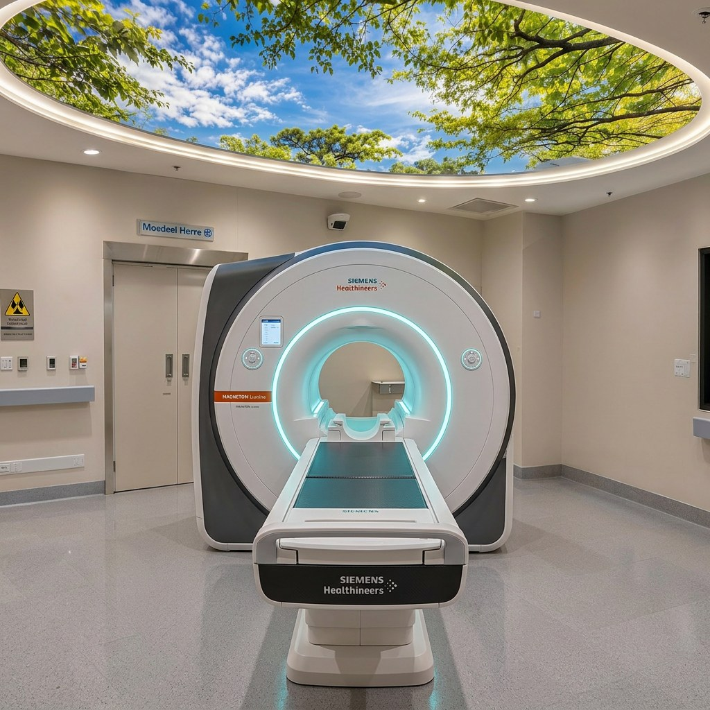
MAGNETOM-Type 1.5T Scanner — Front View with Patient Table
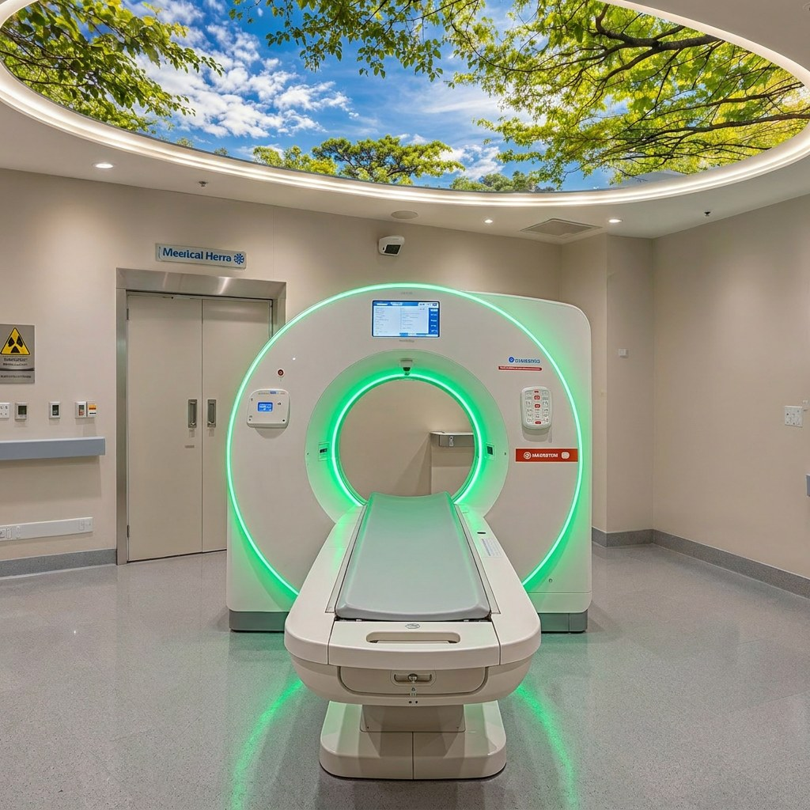
Scanner Room — Illuminated Bore & Sky-Ceiling Panel
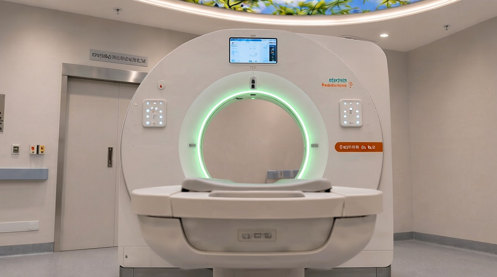
Gantry Elevation — Bore Lighting, Control Panels & Table Interface
The ACR Manual on MR Safety divides the suite into four zones of increasing restriction. The plan must make the sequence physical — through doors, sight lines and the position of the control desk — not just a line on a drawing. [2, 3]
Zone IV — Magnet Room with Direct Line of Sight from the Control Room Window
| Step | Content |
|---|---|
| 1 — Referral & Booking | The radiologist checks the clinical question and assigns a protocol and slot length (typically 20–45 minutes; cardiac and multi-region exams longer). |
| 2 — Safety Screening | Written questionnaire and interview in Zone II: pacemakers, implants, metal fragments, pregnancy, kidney function if contrast is planned. Implant documentation is checked against MR-conditional labelling. |
| 3 — Change & Prepare | Patient changes into a gown and locks away all metal, cards and devices. IV cannula placed if contrast is required. Second screening at the Zone III threshold. |
| 4 — Positioning | The radiographer positions the patient, places receiver coils, and gives hearing protection and the emergency call bulb. Insulating pads prevent skin-to-skin loops (RF burn risk). |
| 5 — Scan & Monitoring | The operator runs sequences from the control room with constant view and voice contact; vital signs are monitored for sedated or critical patients. |
| 6 — Recovery & Report | Cannula removed, brief observation after contrast or sedation, discharge or return to ward. Images go to PACS for radiologist reporting. |
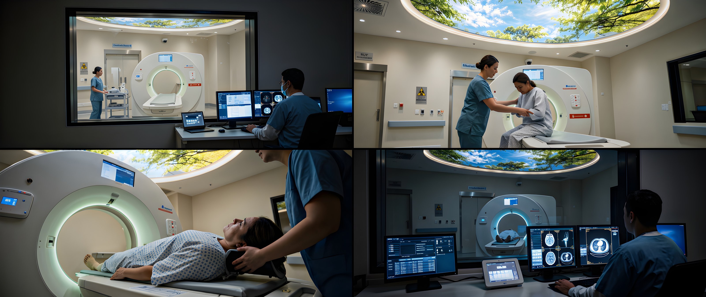
Storyboard 01 — Control-Room View, Patient Assistance onto the Table, Head Positioning & Image Review
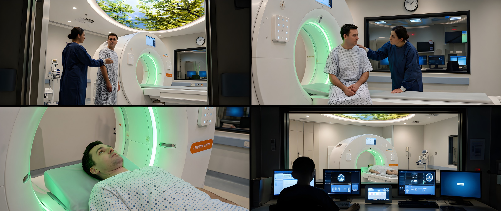
Storyboard 02 — Escort into Zone IV, Patient Briefing, In-Bore Positioning & Scan Monitored from the Control Desk
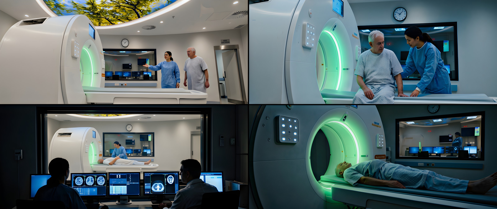
Storyboard 03 — Arrival, Seated Preparation on the Table, Team Supervision & Patient Inside the Bore
Indicative schedule for a single-scanner suite. The scan room and technical room dimensions are fixed by the manufacturer's minimum installation layout and the fringe-field plot; the rest follows the zoning sequence. [4, 5]
| Space | Zone | Notes | Indicative Area |
|---|---|---|---|
| Reception & Waiting | I / II | Shared with imaging department where possible | Shared |
| Screening / Interview Room | II | Private — questionnaire, implant review, consent | 9–12 m² |
| Change Cubicles (incl. accessible) | II | With lockers for metal objects and valuables | 2–4 m² each |
| Gowned Waiting | II / III | Screened patients awaiting their slot | 8–12 m² |
| Patient Preparation / Cannulation | III | IV access, contrast preparation | 9–12 m² |
| Induction & Recovery Bay | III | Sedation / anaesthesia — medical gases, suction, monitoring | 12–16 m² |
| Control Room | III | Operator console, viewing window, direct sight of Zone IV door | 12–16 m² |
| MRI Scan Room (RF-shielded) | IV | Per Siemens layout — table travel, service clearance, access | 35–45 m² |
| Technical / Equipment Room | III | Gradient / RF cabinets, cooling, filter panel interface | 20–30 m² |
| MR-Conditional Equipment Bay | III | Trolley, wheelchair, extinguisher, anaesthetic machine | 4–6 m² |
| Reporting Room | II / III | Radiologist workstation, PACS | 10–12 m² |
| Clean / Dirty Utility, Cleaner, Toilets | II | Shared with imaging department where possible | Shared |
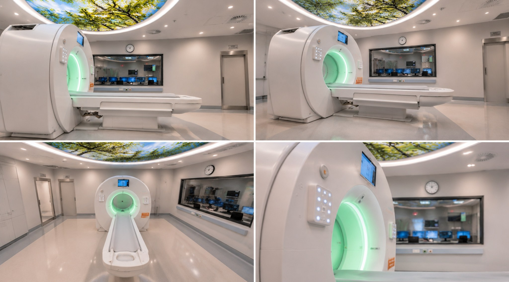
Scan Room — Four Views: Gantry, Table Travel, Control Window & Doors
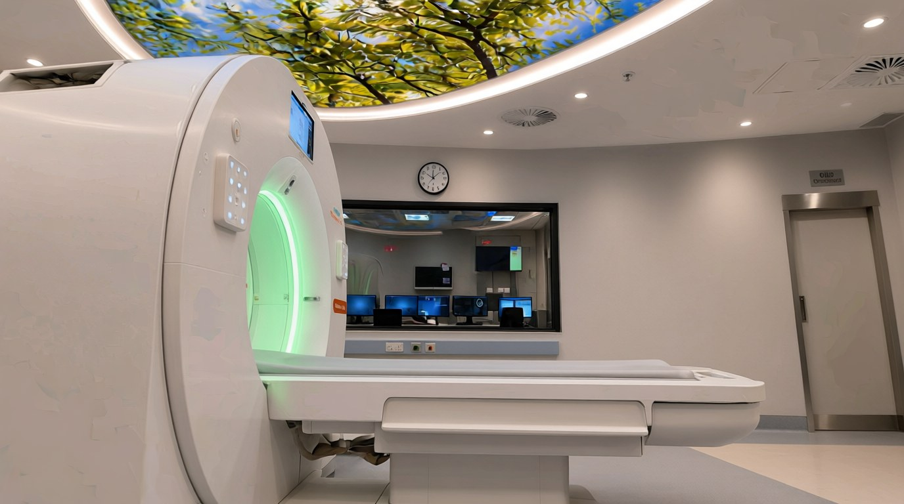
RF-Shielded Viewing Window — Operator Line of Sight to the Bore
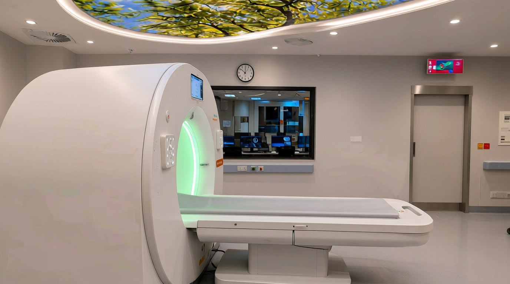
Scan Room / Control Room Interface
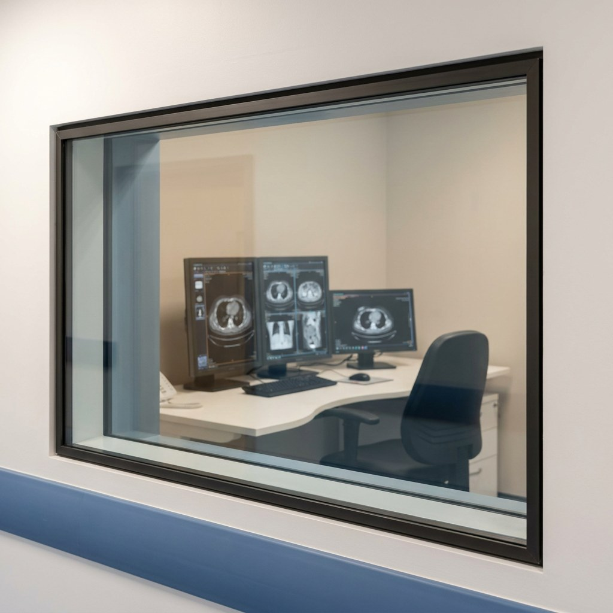
Detail — RF-Shielded Viewing Window into the Control Room
| System | Requirement |
|---|---|
| HVAC | Dedicated, stable temperature and humidity in the scan and technical rooms per Siemens limits; ductwork enters through waveguides; supply grilles non-ferrous. |
| Emergency Exhaust | High-level emergency exhaust in the scan room, activated by the oxygen monitor or quench, to clear any helium leak. |
| Oxygen Monitoring | Oxygen-depletion sensor in the scan room, linked to alarm and emergency exhaust. |
| Cooling | Chilled water for the cold head compressor and gradient system — redundant or with backup, since cold-head failure leads to helium boil-off. |
| Power | Dedicated supply with main disconnect; emergency power for the cold head / compressor; magnet emergency stop (rundown) separate from system off. |
| Lighting | DC / LED fittings approved for MR use inside the cage, dimmable — no flicker or RF noise. |
| Medical Gases | Oxygen, medical air and suction in the scan room and induction bay, via MR-conditional outlets and waveguides. |
| Fire | Non-magnetic (MR-conditional) extinguishers only near Zone IV; fire-fighter procedure agreed with the civil defence — the magnet stays on in a fire. |
| Communication | Intercom, patient call bulb, camera, and MR-compatible music / headphones for patient comfort. |
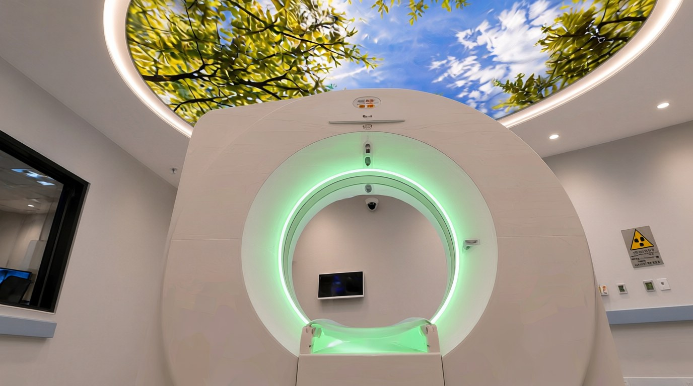
Patient View — Bore Lighting & Sky-Ceiling Panel
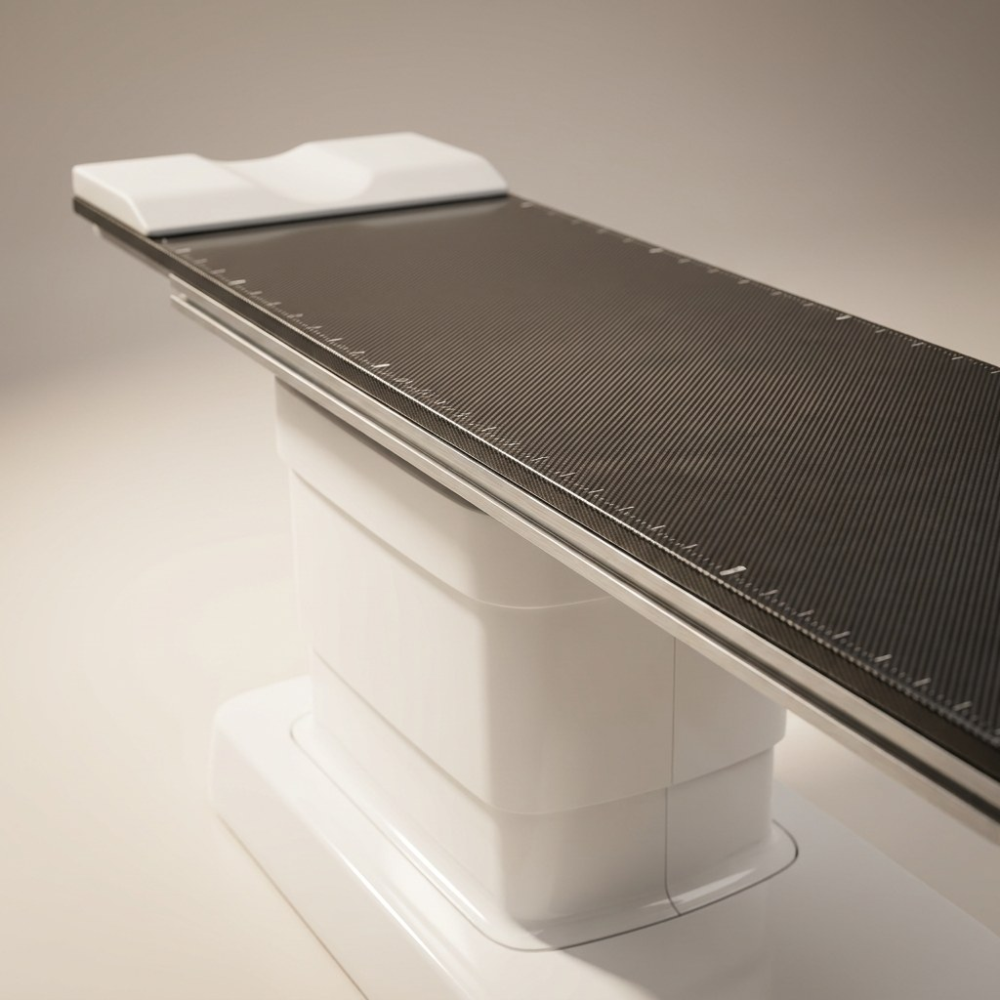
Detail — Patient Table & Cushioning
Each hazard has a design answer as well as an operational one. [2, 3, 6]
| Reference | Scope |
|---|---|
| ACR Manual on MR Safety | Four-zone access model, screening, MR personnel levels, safety policies |
| MHRA — Safety Guidelines for MR Equipment in Clinical Use | Roles (MR Responsible Person, MR Safety Expert), controlled access, emergency procedures |
| IEC 60601-2-33:2022 | Basic safety and essential performance of MR equipment for medical diagnosis |
| iHFG Part B — Medical Imaging Unit | Functional relationships, room list and planning of imaging departments |
| NHS HBN 06 — Diagnostic Imaging & Interventional Radiology | Imaging department planning, MRI suite layout principles |
| Siemens Healthineers Site Planning Guide | Binding for fringe field, loads, RF cage, quench pipe, cooling, power and room dimensions |
| Local authority / licensing body | To be confirmed for the project location |
An MRI suite is a sequence of controlled thresholds wrapped around a permanent magnetic field. The architect fixes its success early: the location of the magnet relative to lifts, roads and other imaging; the zoning sequence and the control-room sight line; the RF cage, quench route and delivery path; and a patient environment calm enough that fewer patients need sedation.
Equipment selection — here the Siemens MAGNETOM Sola 1.5T — should be made before detailed design, because the manufacturer's site planning data define the room, not the other way around.
This research brief is prepared from publicly available clinical references, manufacturer information and safety guidance. It does not prescribe areas, shielding values, structural loads or services for a specific project — these depend on the Siemens site planning documentation for the purchased configuration, the appointed MR physicist / MR Safety Expert and the competent authority. All images are AI-assisted illustrative visualisations; equipment details and signage shown in them are not construction drawings or evidence of compliance.
Interior visualisations of the MRI scan room: gantry, patient table travel, control window and finishes.
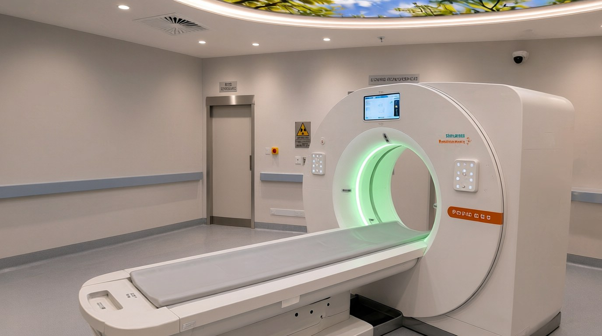
Gantry & Table — Side Perspective
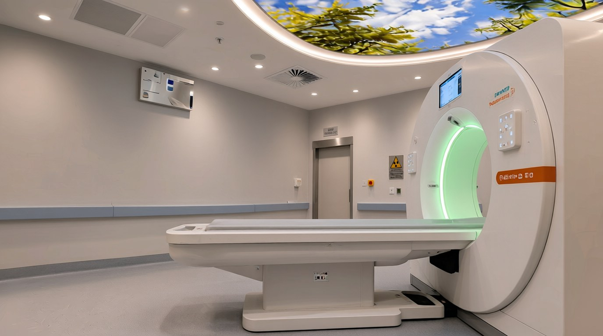
Patient Table Extended — Loading Position
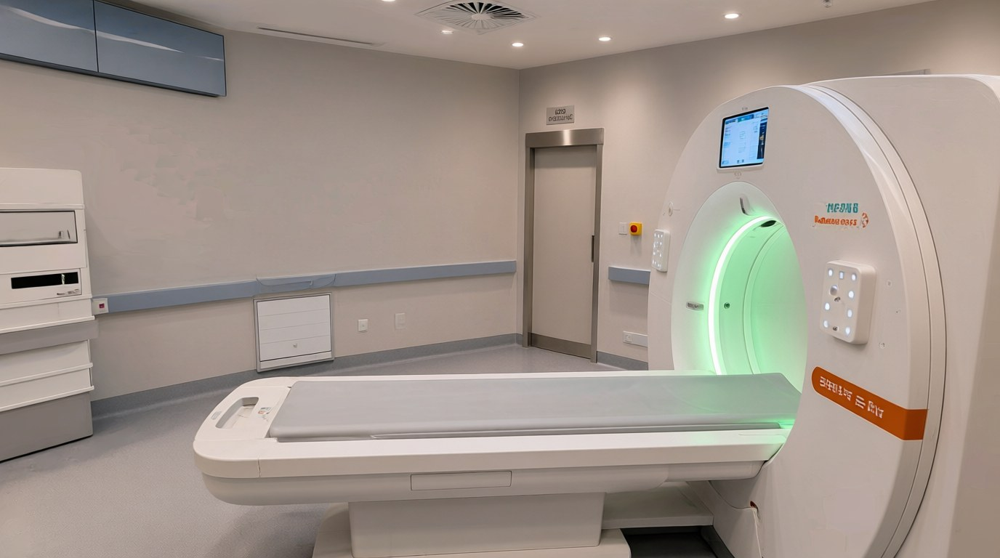
Scan Room Toward the RF Door
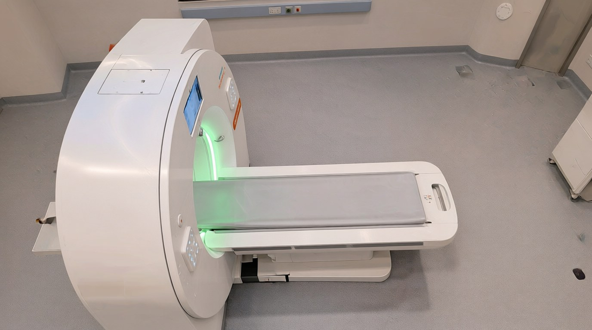
Gantry — High-Angle View
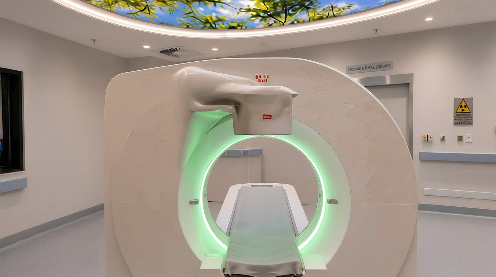
Service Side — View Through the Bore
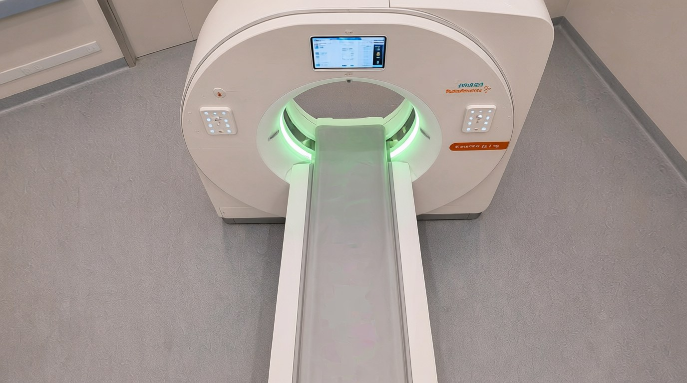
Table Axis into the Bore
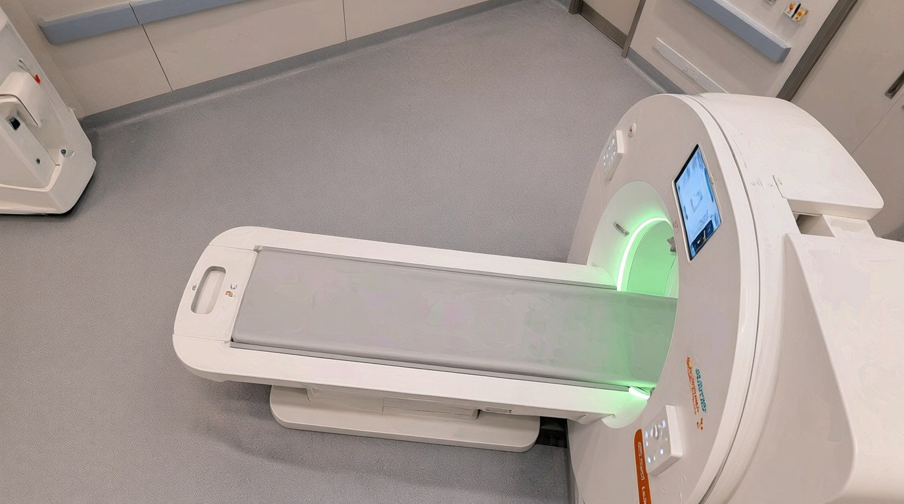
Patient Table — Floor Clearance & Transfer Side
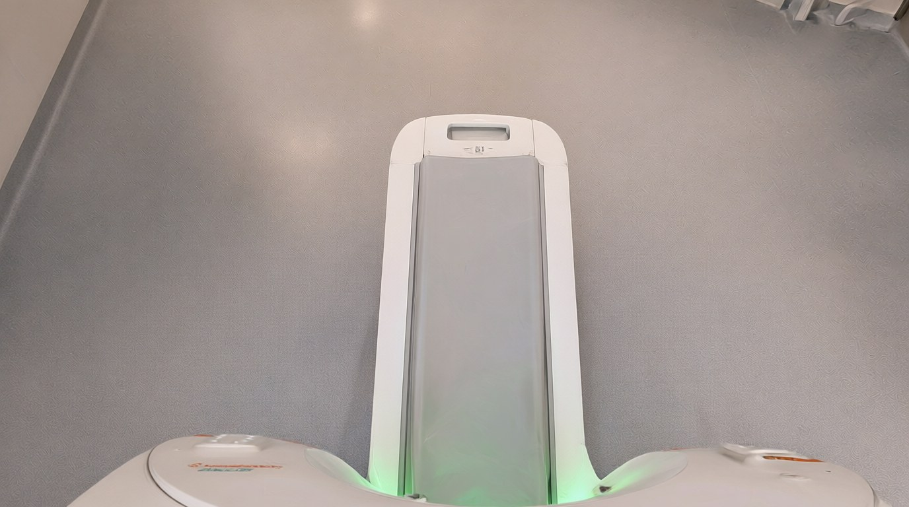
Patient Table — Head-End View